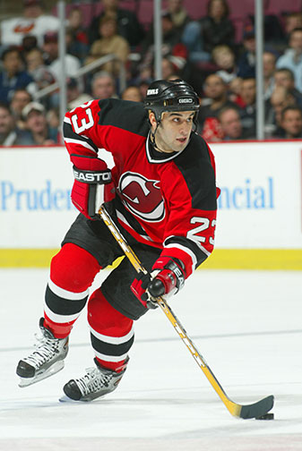

- Prénom : Kilian
- Nom : JANUS
- Lieu et date de naissance : Meaux (77) le 23 Juin 1995
- Sport, Piano/guitare/chant 🎜 et Jeux vidéos 🎮

Ils vous le diront mieux que moi, voici le portrait de Kiki par Janel :
"Mais d’où sort ce génie ? Du ventre de sa mère me direz-vous, et vous auriez raison. Kilian Janus est né en région parisienne où il a passé son enfance et son adolescence. Après son bac, qu’il a obtenu haut la main, il est parti en école d’ingénieur à l’INSA de Rennes. La ville lui plaisait beaucoup, et pour preuve il y est retourné, mais l’école pas vraiment, donc il est parti à Montpellier pour une école de commerce. Quelle erreur !! Mais on ne peut en vouloir à notre cher Kilian national, il est revenu à Rennes et on le remercie de nous faire briller par sa présence ici.
Lui qui a été joueur professionnel sur Rocket League, champion du monde de hockey mais aussi un guitariste hors pair (Ed Sheeran l’a même supplié de faire un feat avec lui) !
Beaucoup d’informations pour dire que notre King K est un try harder qui cherche toujours à s’améliorer et apprendre. Si un jour vous avez l’occasion de voir le bas de son visage, prenez une photo vous deviendrez riche !
Hasta luego amigos."
"Mais d’où sort ce génie ? Du ventre de sa mère me direz-vous, et vous auriez raison. Kilian Janus est né en région parisienne où il a passé son enfance et son adolescence. Après son bac, qu’il a obtenu haut la main, il est parti en école d’ingénieur à l’INSA de Rennes. La ville lui plaisait beaucoup, et pour preuve il y est retourné, mais l’école pas vraiment, donc il est parti à Montpellier pour une école de commerce. Quelle erreur !! Mais on ne peut en vouloir à notre cher Kilian national, il est revenu à Rennes et on le remercie de nous faire briller par sa présence ici.
Lui qui a été joueur professionnel sur Rocket League, champion du monde de hockey mais aussi un guitariste hors pair (Ed Sheeran l’a même supplié de faire un feat avec lui) !
Beaucoup d’informations pour dire que notre King K est un try harder qui cherche toujours à s’améliorer et apprendre. Si un jour vous avez l’occasion de voir le bas de son visage, prenez une photo vous deviendrez riche !
Hasta luego amigos."
MON PORTRAIT CHINOIS
- Livre : L’écume des jours. cocktail de jazz, amour, idéologies. Une oeuvre qui fait sourire comme pleurer
- Sport : hockey. Physique, technique, stratégique, collectif/individuel.
- Plat : riz à l’espagnole. Origines, nostalgie, ma môman
- Instrument : guitare. Classique, folk ou électrique, tant de possibilités. Concilie tous les genres (comme le piano que j’ai joué pendant 10 ans)
- Pays : la Grèce. Pour sa beauté et son histoire